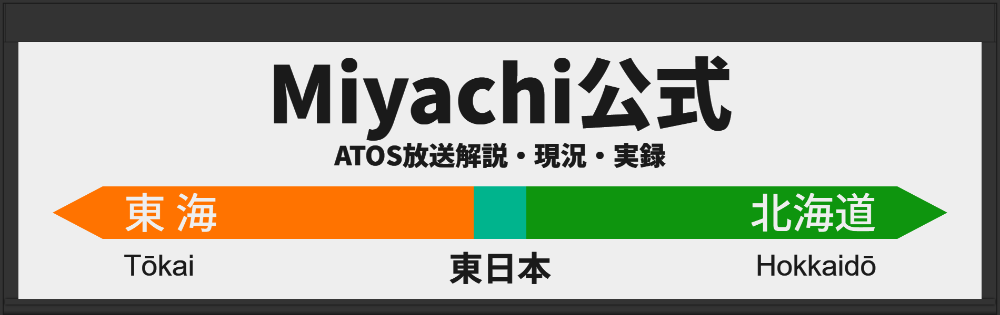
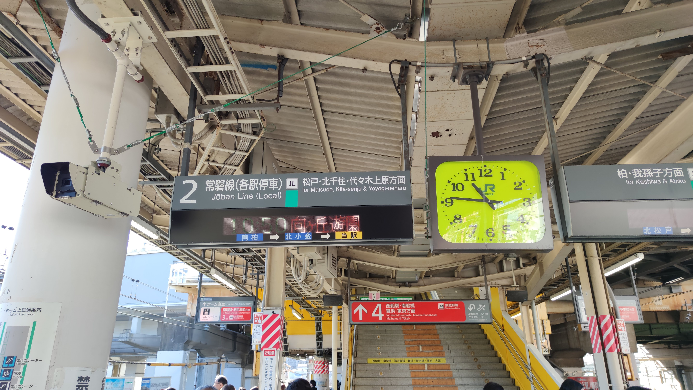

このサイトではATOS放送集には無いような内容のことを解説します。
このサイトに足りないと思うことがあれば連絡をお願いします！
| 1 | ATOS放送駅別実録 | 駅ごとのページからそれぞれの年代の音声を聞くことができます。 |
|---|---|---|
| 2 | その他音声集 | 収録駅がファイル名にない駅の音声をここで公開しています。 |
| 3 | 各駅過去現況 | 年代別に駅ごとの使用されていた放送形式を載せています。 |
| 4 | パーツ集 | ATOS放送のパーツをここで一挙公開！もしかしたら聞いたことのない物もあるかも？ |
| 5 | 解説 | ATOS放送について「どのような形式があるのか」、「付帯の付き方はなんだ」などをここで解説します！ |
| 6 | 更新履歴 | 当サイトの更新履歴をこのページに載せます。 |
| 7 | リンク集 | 管理者が作成している他のサイトや管理者本人のおすすめのサイトをこのページに載せています。 |
| 8 | Miyachube | 僕自身が作成した動画や提供していただいた動画などを公開しています。出したい動画があればチャンネルアイコン(初回)とサムネイル、動画を用意して送ってください！ |
常磐改良型ATOS放送が残っている駅一覧です。残り18駅
| 路線名 | 駅名 |
|---|---|
| ■ 中央・総武線 | 平井・市川・本八幡・下総中山・東船橋・津田沼・幕張本郷・新検見川・稲毛・西千葉 |
| ■■ 中央線(中央本線) | 西国分寺・国立・初狩 |
| ■ 根岸線 | 磯子・洋光台・港南台 |
| ■ 南武線 | 稲城長沼・南多摩 |
| 路線名 | 駅名 |
|---|---|
| ■ 武蔵野線 | 新秋津・新小平 |
| ■ 横須賀線 | 新川崎 |
＞＞＞このサイトへのリクエストを送信する＜＜＜